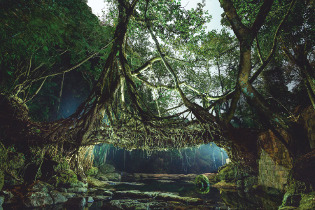

Мост из корней: необычное индийское изобретение
История фотографа, который решил запечатлеть уникальные индийские «живые» мосты.

В индийском штате Мегхалая, одном из самых влажных мест на Земле, жители деревень плетут прочные пешеходные мосты из корней каучуконосного упругого фикуса. Чтобы рассказать об этой традиции, Прасэнджит Ядав сфотографировал за год около 30 таких мостов.
Чтобы сделать мост, из стволов орешника вырезают прутья и перекидывают их через реку. Затем пускают корни находящегося на одном из берегов фикуса по этим прутьям. Обвивая их, корни постепенно растут и вскоре достигают другого берега. Обычно возведение таких мостов занимает от 10 до 15 лет. Интересно, что каучуковый мост может выдержать вес 50 человек, однако с каждым днем он будет становиться ещё крепче. Некоторым ныне существующим фикусовым мостам более пяти сотен лет.
«Я хотел, чтобы эти мосты выглядели так, словно они появились из вселенной “Властелина колец”, и при этом не казались чем-то фантастическим», –говорит фотограф.
Подготовка
Ядав раньше никогда не видел мостов из живых корней, и вот однажды ему рассказали об одном, возле деревни Новет. Множество туристов делали здесь фото, но Ядав Прасэнджит хотел, чтобы его снимок получился особенным. «Сложно сделать так, чтобы растение на фото не потеряло своего очарования», – рассказывает Ядав. Готовясь к съемке, он проконсультировался с другими фотографами. Прасэнджит решил, что начнет снимать после заката. Это рискованно: внезапные ливни могли спровоцировать паводки – они особенно опасны ночью.
«Я хотел, чтобы эти мосты выглядели так, словно они появились из вселенной “Властелина колец”, и при этом не казались чем-то фантастическим», –говорит фотограф.
Список необходимого
Ядав уже четвертый раз отправлялся в этот район и поэтому знал, что брать с собой. Для себя Прасэнджит взял совсем немного непромокаемой одежды – куда больше внимания он уделил тому, чтобы уберечь от влаги камеру.
- Зонты, чтобы защитить оборудование.
- Прожекторы и светодиодная панель.
- Мощный налобный фонарь.
- Резиновый чехол для камеры.
- Штатив.
- Рулон черной матовой фольги для устранения бликов.
- Насадки для камеры.
- Матрас
«Рисование» светом
Прасэнджит прилетел в Гувахати, взял такси до деревни Новет. Оттуда около получаса шел пешком до моста. Три недели фотограф экспериментировал с освещением, пытаясь «нарисовать» части моста и окружающий пейзаж, используя длинную выдержку. Для фотографии, которую вы видите, потребовалась выдержка в 438 секунд, все это время Ядав ходил вокруг моста и направлял свет, куда нужно. Поскольку съемка шла в темноте, самого фотографа на снимке не видно.